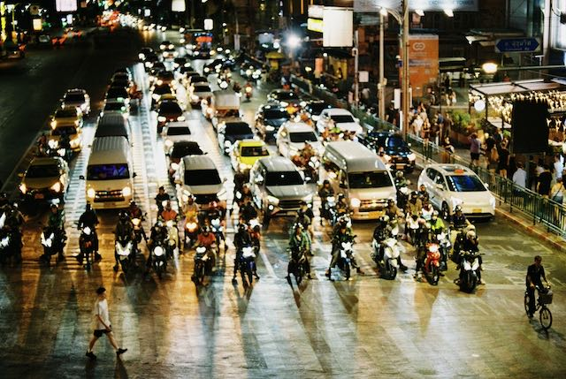
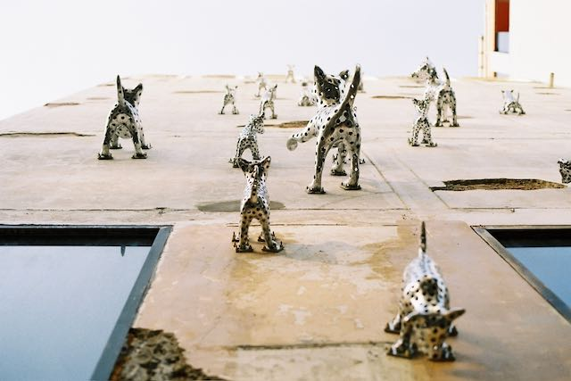
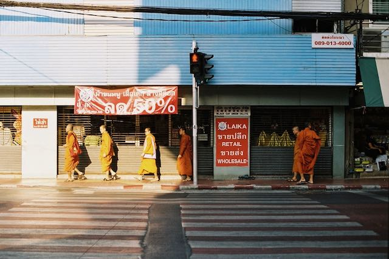
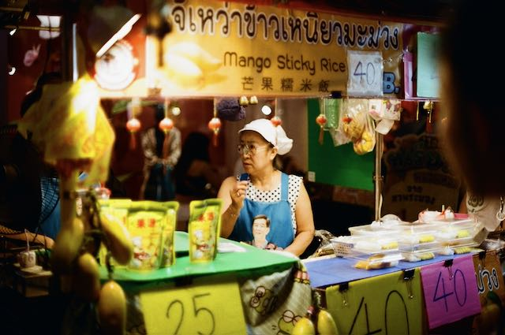
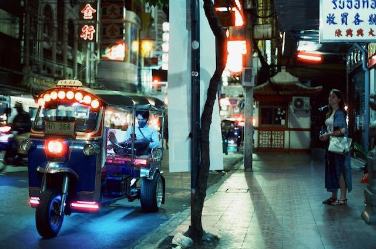

Experience Bangkok, where ancient temples meet a futuristic skyline in a whirlwind of energy and flavor.
You have to dive into its vibrant streets and legendary food scene to truly understand its magic.
Come and discover this one-of-a-kind city for yourself!

Impressions Of a City - BANGKOK

Discover a thriving creative scene where bold contemporary art galleries and vibrant street murals breathe new life into the city's historic walls.

Marvel at the distinctive architecture of ornate temples with their tiered roofs and witness the striking sight of monks in vibrant saffron robes, which define the unique visual character of the city.

Prepare your taste buds for an unforgettable adventure as you dive into the aromatic clouds of Chinatown, discovering world-class flavors hidden in humble street-side stalls.

Feel the pulse of the city as you zip through colorful backstreets in a buzzing tuk-tuk or glide past historic teak houses on a high-speed longtail boat along the Chao Phraya River.
"Exploring the hidden corners of Bangkok with this analog photo tour was the highlight of my trip.
We moved away from the typical tourist trails and captured the city’s raw energy on film—from the striking orange of monks' robes against ancient stone to the vibrant, gritty street art in back alleys.
The pace was perfect, and having a local guide who understands light and composition made all the difference for my shots.
If you want to experience the real, unpolished Bangkok through your lens and grab some incredible street food along the way, this is it!"
Sarah, from Berlin
Start your experience!
Contact us and let us plan your personal Bangkok-experience